모여드는 사람들
음악을 오래 들을수록 작은 사람들이 한 명씩, 최대 6명까지 모여듭니다. 음악을 멈추면 손을 흔들고 떠납니다.
- 박자에 맞춰
- 춤, 헤드뱅잉, 브레이크댄스
- 느긋하게
- 책 읽기, 꾸벅꾸벅 졸기, 통화, 술래잡기
- 가끔은
- 돌아가는 판 위에서 달리기
지금 듣는 음악을 턴테이블 위에서.
Apple Music이나 Spotify에서 음악을 재생하면 Mac 바탕화면 아이콘 뒤에서 레코드판이 돌아갑니다. 앨범 커버는 판의 라벨이 되고, 바늘은 곡의 진행에 따라 움직입니다. 오래 들을수록 작은 사람들이 하나둘 모여듭니다.
판 위에서
음악을 오래 들을수록 작은 사람들이 한 명씩, 최대 6명까지 모여듭니다. 음악을 멈추면 손을 흔들고 떠납니다.
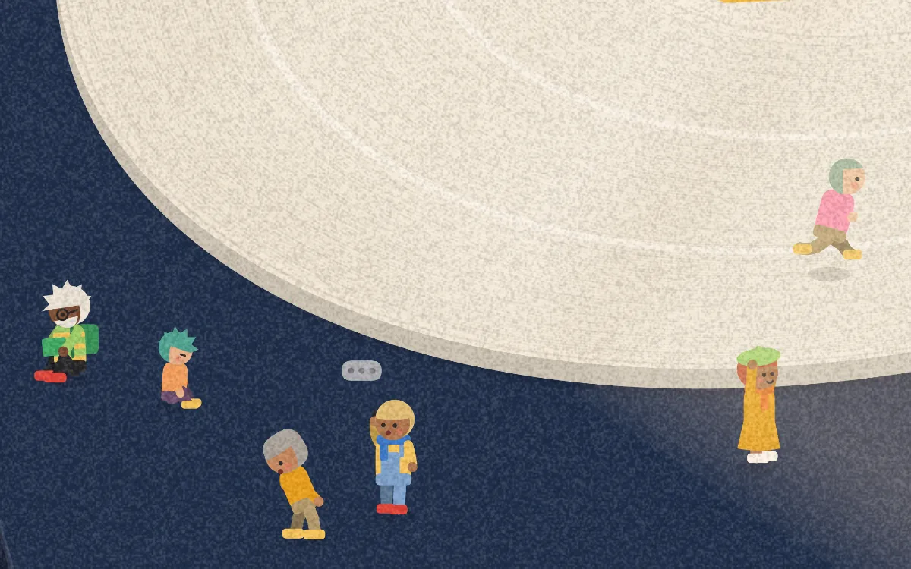
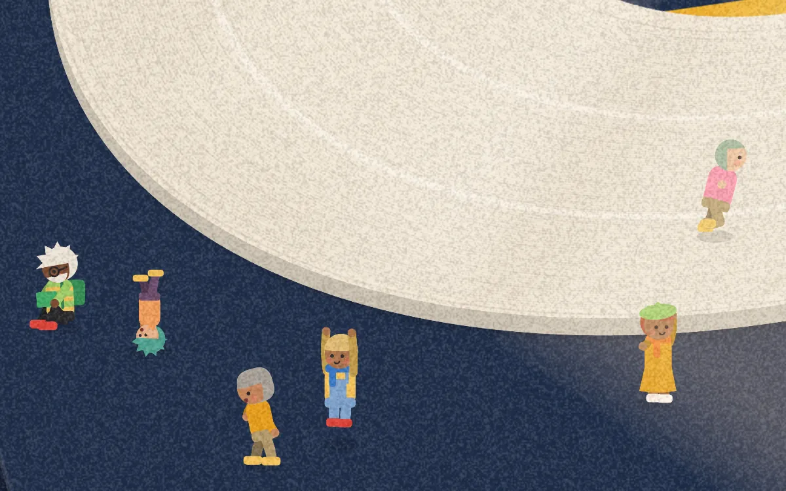
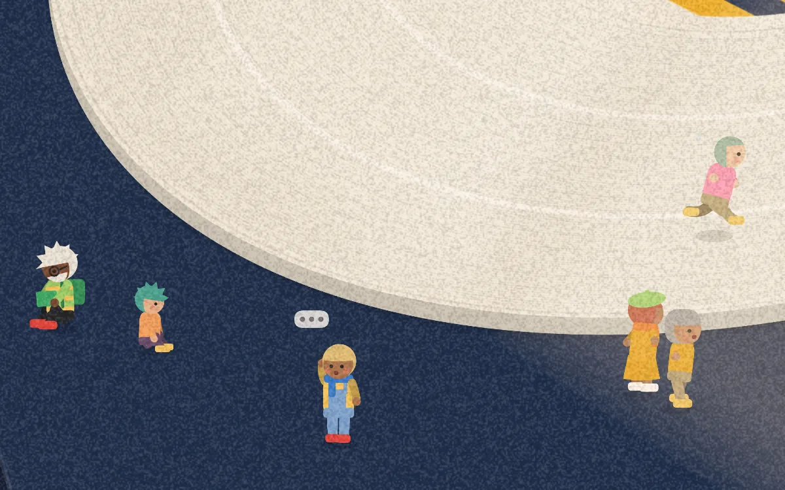
창문으로 들어오는 햇빛이 Mac의 시계에 맞춰 책상 위를 지나가고, 화면의 분위기도 아침부터 밤까지 바뀝니다.
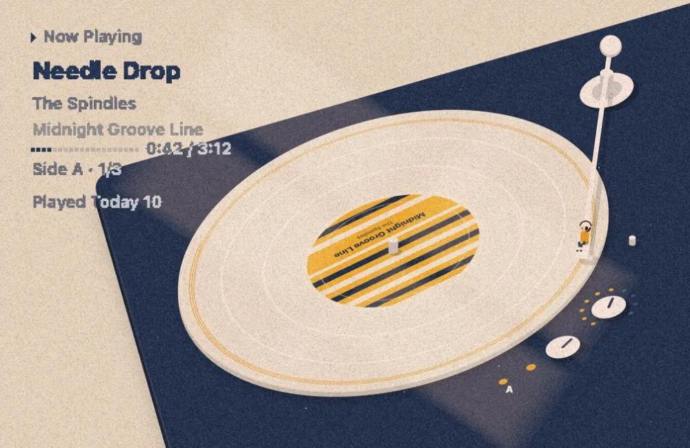
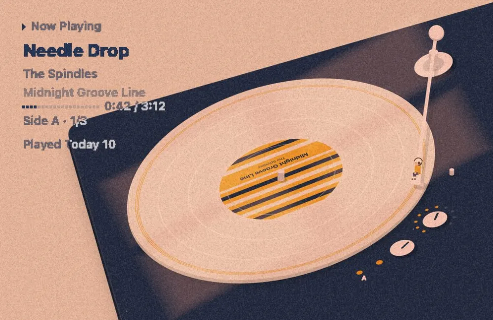
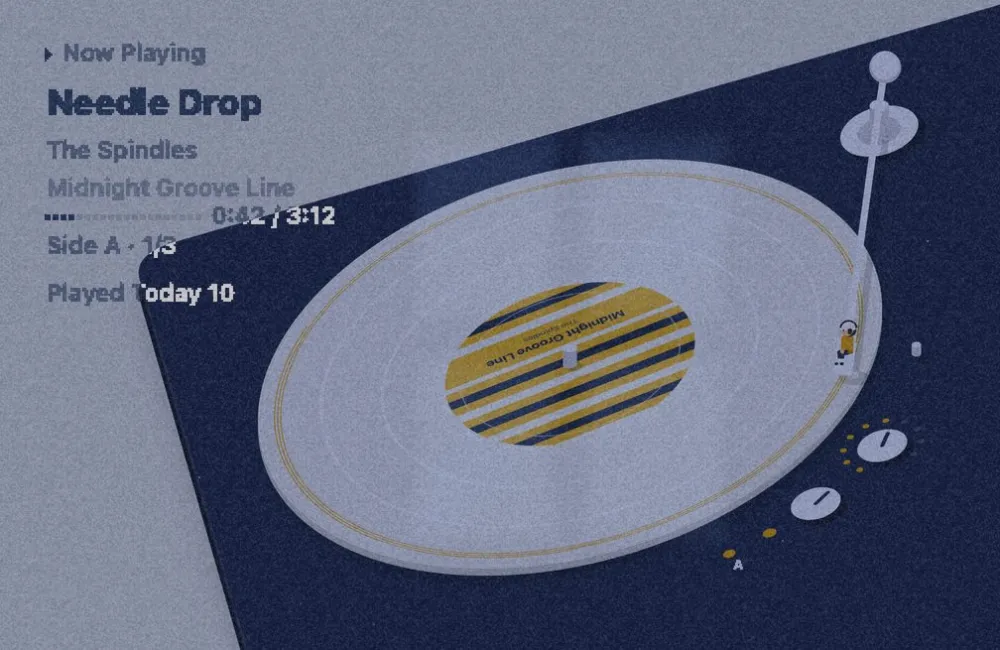
앨범의 색을 그대로 쓰거나 컬러 바이닐로 바꿀 수 있고, 판·배경·선·글자·톤암의 색을 직접 고를 수도 있습니다. 턴테이블은 화면 왼쪽, 가운데, 오른쪽 중 원하는 곳에 둘 수 있습니다.
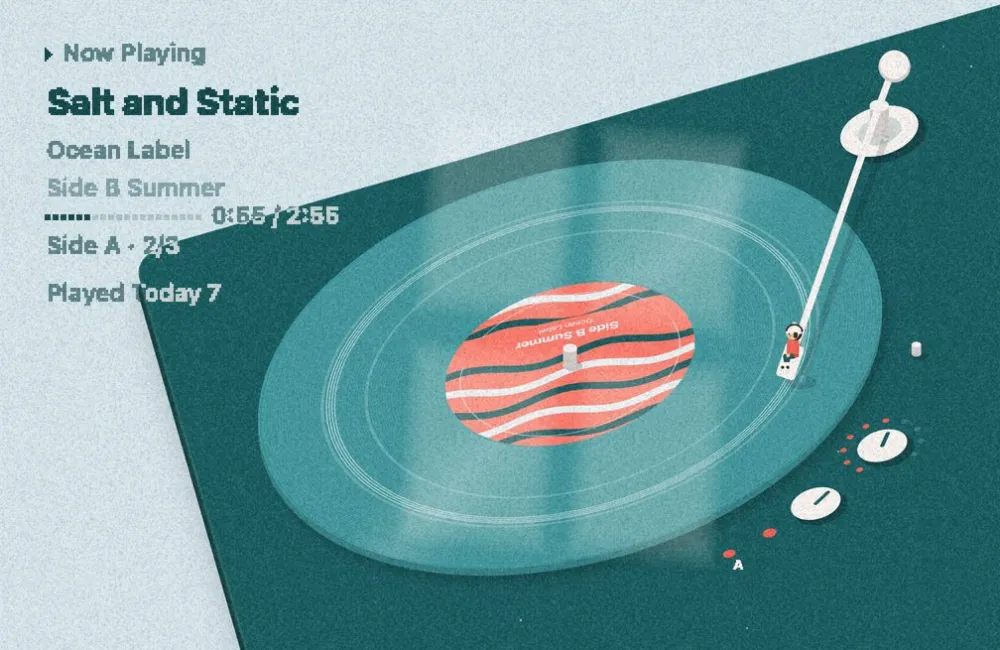
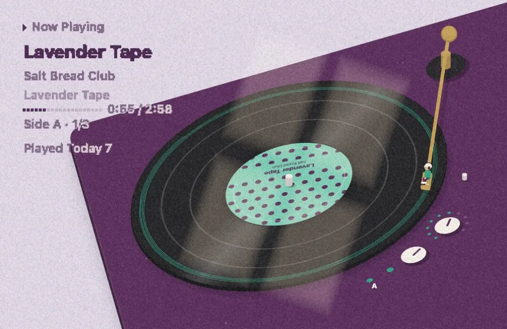
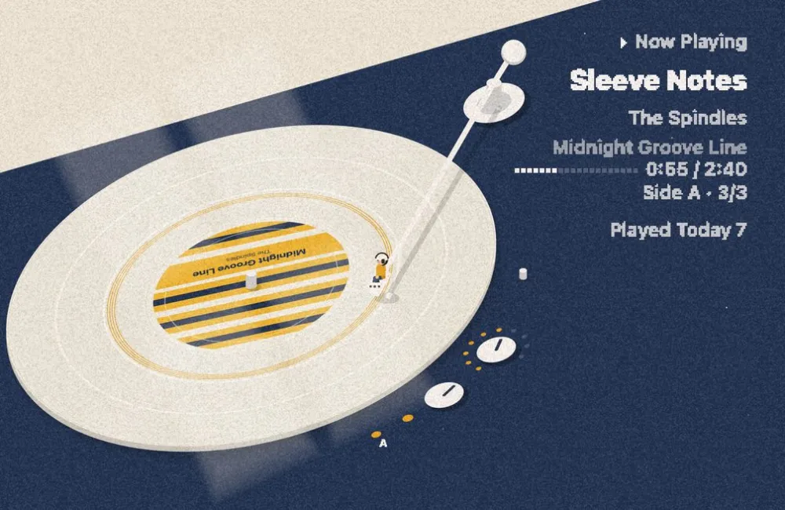
바탕화면에서
앱에 포함된 미리보기 앨범 중 네 장입니다.
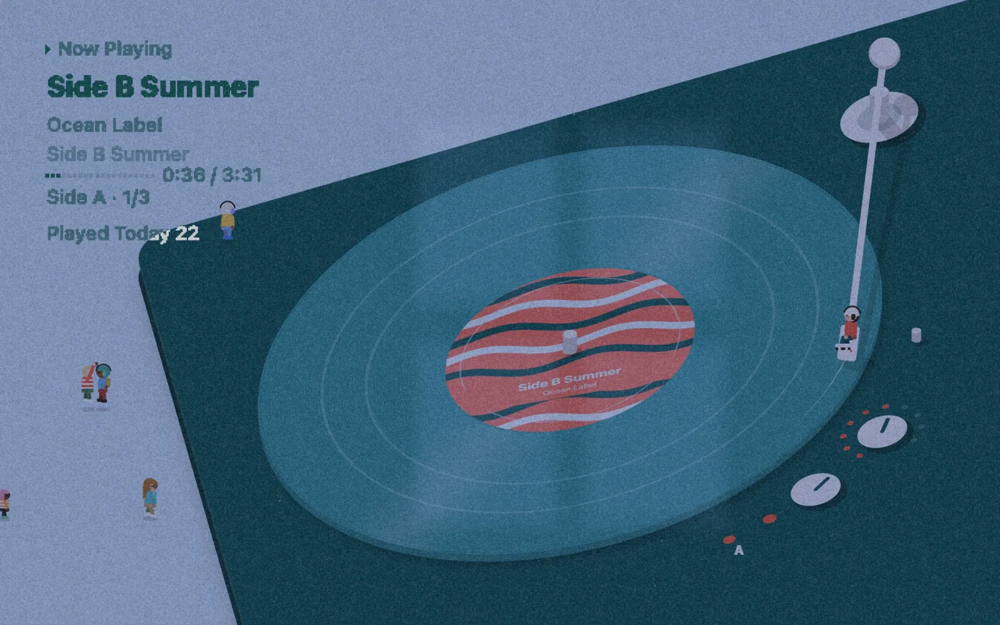
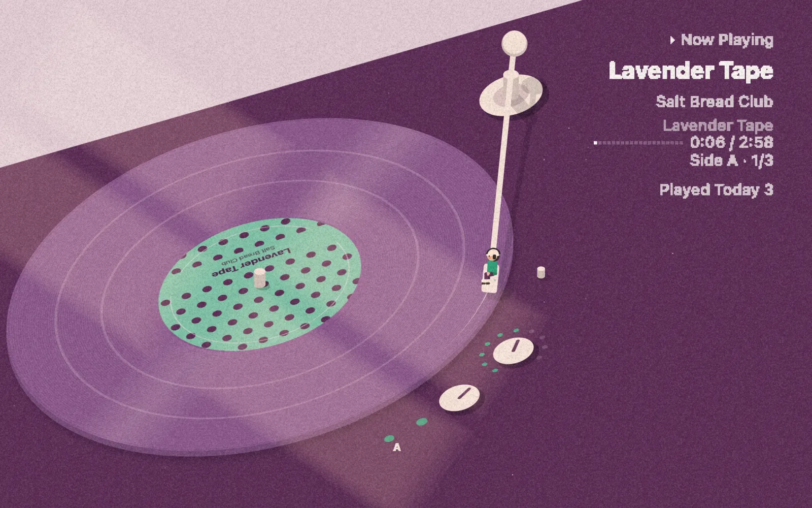
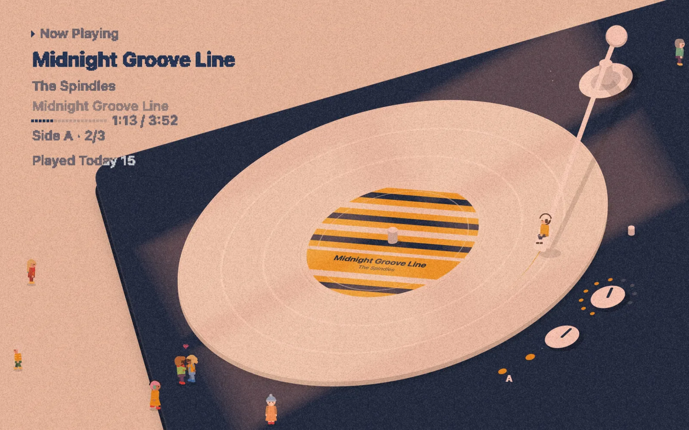
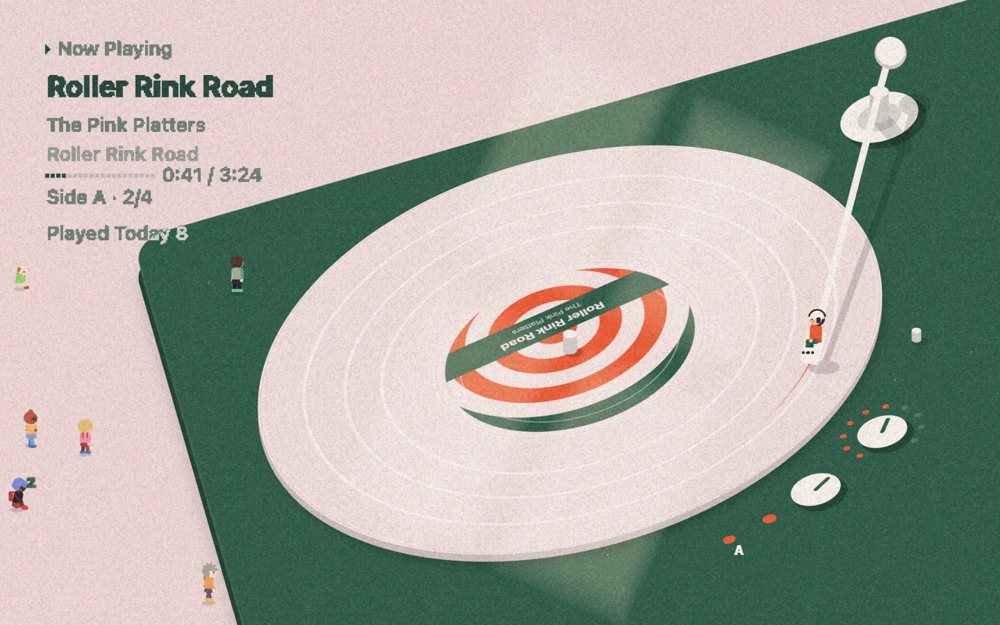
모든 앨범은 앱에 포함된 미리보기 앨범입니다.
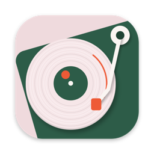